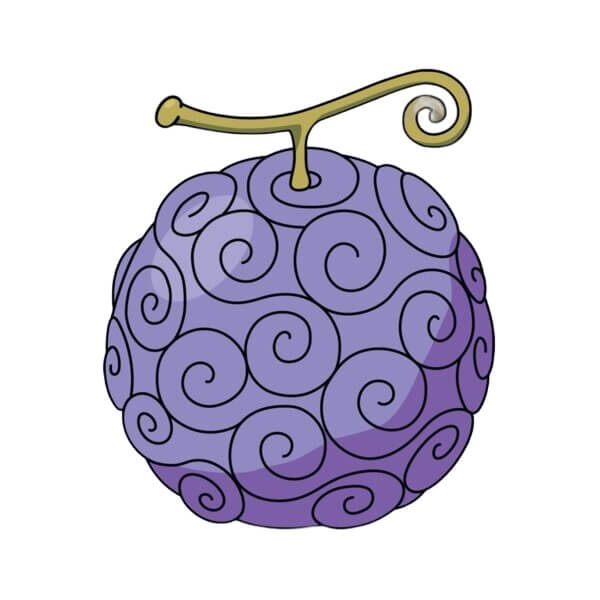
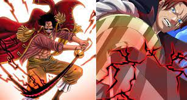
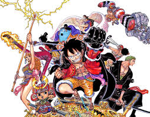
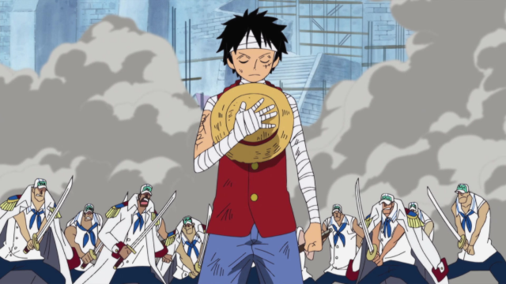
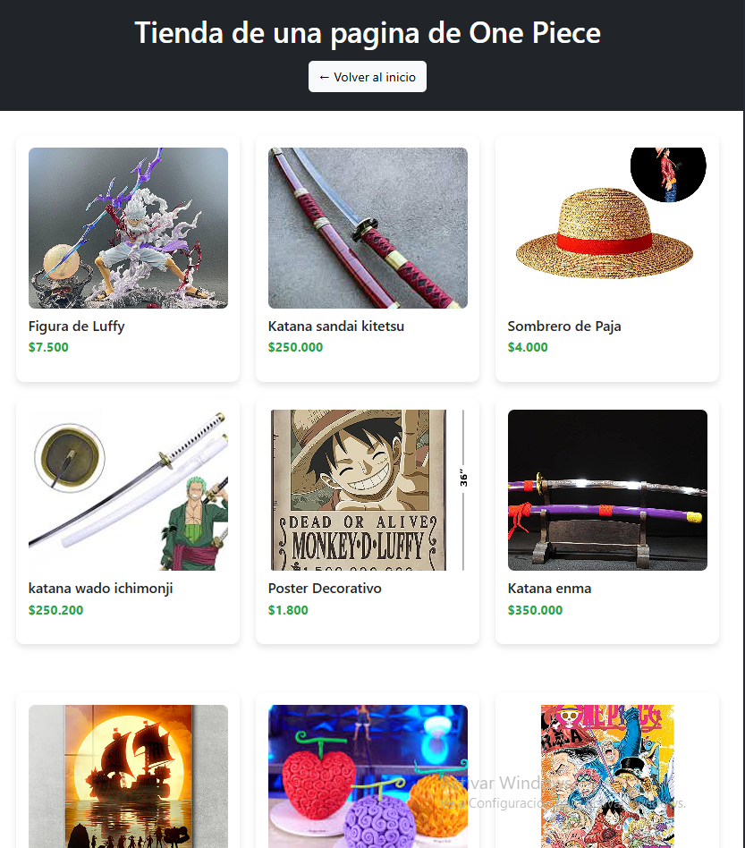

Explicación de las frutas del diablo
Click en la foto para entrar

Explicación del haki
Click en la foto para entrar

Los mugiwaras
Click en la foto para entrar

Explicación sagas pre time skip
Click en la foto para entrar

Explicación del anime de One Piece
¿De qué va One Piece? Este manga narra las aventuras de Monkey D. Luffy, un joven valiente y decidido que sueña con convertirse en el Rey de los Piratas. Su objetivo es encontrar el tesoro conocido como "One Piece", dejado por Gol D. Roger en la isla Laugh Tale.
One Piece se desarrolla en un mundo lleno de mares, islas, culturas y peligros. El Grand Line es la corriente principal donde se encuentran las mayores aventuras y misterios del mundo pirata.
¿Por qué es tan reconocida esta serie?
Por su narrativa épica, personajes entrañables y valores como la amistad, el sueño y la perseverancia. One Piece conecta con personas de todas las edades y culturas.
Productos que necesitas
Click en la imagen para ver productos

Formulario de opinión
Instagram: